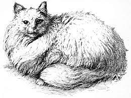

Let any one have a plague of rats and mice, as I once had, and let them be delivered therefrom by cats, as I was, and they will have a lasting and kind regard for them.
Usefulness of cats
A cat is a domestic animal but there are wild cats too. Cats are found in various colours. The eyes of the cat which are of gray colour shine at night. A cat has sharp claws. The food of the cat is rats, pigeons and birds. She is fond of milk. It can climb up a tree and can jump from one roof to the other. When she mews the rats run away, and she also kills them. In this way she keeps rats away from our house. She has soft fur. She gives birth to kittens once in a year. She is very afraid of dogs.Cat is a wonderful domestic animal. She is playful also. But whenever she is put in trouble she becomes very dangerous. It attacks even a man and kills him. But on the whole we can say that a cat is a loving animal.